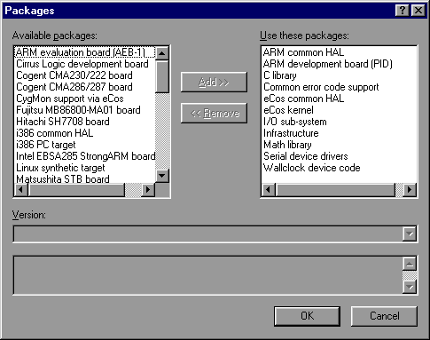
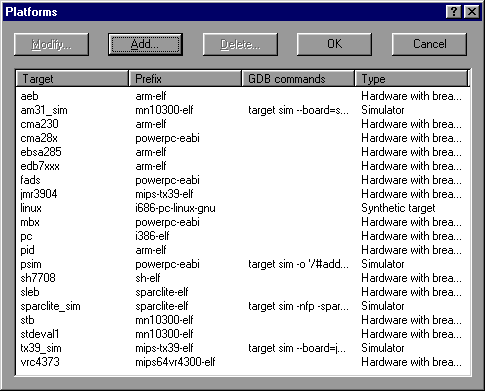
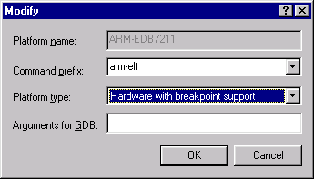
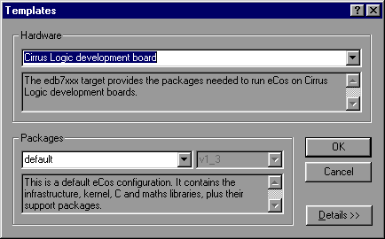
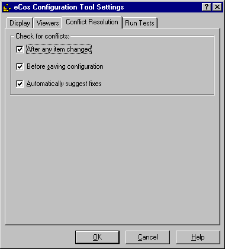
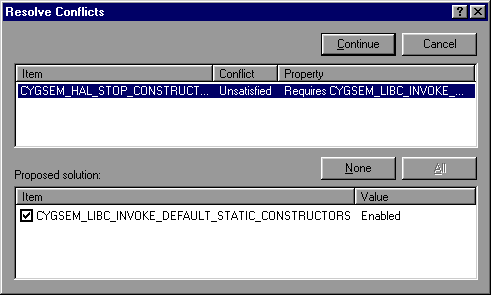

|
Updating the Configuration |
||
To add or remove packages
from the configuration, select Build
 Packages. The following dialog box will be displayed:
Packages. The following dialog box will be displayed:

The left list shows those packages that are available to be loaded. The right-hand list shows those that are currently loaded. In order to transfer packages from one list to another (that is, to load or unload packages) double-click the selection or click the Add or Remove buttons.
The version drop-list displays the versions of the selected packages. When loading packages, this control may be used to load versions other than the most recent (current). Note that if more than one package is selected, the version drop-list will display only the versions in common to all the selected packages.
The bottommost window in the dialog displays a brief description of the selected package. If more than one package is selected, this window will be blank.
To add, modify or remove
entries in the list of platforms used for running tests, select
Tools Platforms.
The following dialog will be displayed:
Platforms.
The following dialog will be displayed:

You may add, modify or remove platform entries as you wish, but in order to run tests, a platform must be defined to correspond to the currently loaded hardware template. The information associated with each platform name is used to run tests.
To modify a platform, click the Modify button with the appropriate platform selected, or double-click on an entry in the list. A dialog will be displayed that allows you to change the command prefix, platform type and arguments for GDB.

To add a new platform, click the Add button. A similar dialog will be displayed that allows you to define a new platform. To remove a platform, click the Delete button or press the DEL key with the appropriate platform selected.

The command prefix is used when running tests in order to determine the names of the executables (such as gdb) to be used. For example, if the gdb executable name is "arm-elf-gdb.exe" the prefix should be set to "arm-elf".
The platform type indicates the capabilities of the platform - whether it is hardware or a simulator, and whether breakpoints are supported.
The arguments for the GDB field allow additional arguments to be passed to gdb when it is used to run a test. This is typically used in the case of simulators linked to gdb in order to define memory layout.
To load a configuration
based on a template, select Build
 Templates.
Templates.
The following dialog box will be displayed:

Change the hardware template, the packages template, or both. To select a hardware template, choose from the first drop-list. To choose a packages template, choose from the second. Brief descriptions of each kind of template are provided in the corresponding edit boxes.
During the process of configuring eCos it is possible that conflicts will be created. For more details of the meaning of conflicts, see CDL Concepts .
The Conflicts Window displays all conflicts in the current configuration. Additionally, a window in the status bar displays a count of the conflicts. Because the resolution of conflicts can be time-consuming, a mechanism exists whereby conflicts can be resolved automatically.
You can choose conflict resolution options using a dialog box
displayed by means of the View Settings
Settings Conflict
resolution menu item.
Conflict
resolution menu item.

You can choose to have conflicts checked under the following circumstances:
The method you chose depends on how much you need your configuration to be free of conflicts. You may want to avoid having to clean up all the conflicts at once, or you may want to keep the configuration consistent at all times. If you have major changes to implement, which may resolve the conflicts, then you might want to wait until after you have completed these changes before you check for conflicts.
If you choose to check conflicts after any item is changed, only newly arising conflicts are displayed. If you choose to check for conflicts before saving the configuration, the complete set is displayed.
If you check the
"Automatically suggest fixes" check box, a conflicts
resolution dialog box will be displayed whenever new conflicts are
created. The same dialog box may be displayed at any stage by means
of the Tools Resolve
Conflicts menu item.
Resolve
Conflicts menu item.
The conflicts resolution dialog box contains two major windows.

The upper contains the set of conflicts to be addressed; the format of the data being as that of the Conflicts Window. The lower window contains a set of proposed resolutions - each entry is a suggested configuration item value change that as a whole may be expected to lead to the currently selected conflict being resolved.
Note that there is no guarantee:
that automatic resolutions will be determinable for every conflict.
that the resolutions for separate conflicts will be independent. In other words, the resolution of one conflict may serve to prevent the resolution of another.
that the resolution conflicts will not create further conflicts.
The above warnings are, however, conservative. In practice (so long as the number and extent of conflicts are limited) automatic conflict resolution may be used to good effect to correct problems without undue amounts of programmer intervention.
In order to select the conflicts to be applied, select or clear the check boxes against the resolutions for each proposed resolution. By default all resolutions are selected; you can return to the default state (in other words, cause all check boxes for each conflict to again become checked) by pressing the "Reset" button. Note that multiple selection may be used in the resolutions control to allow ranges of check boxes to be toggled in one gesture.
When you are happy to apply the selected resolutions for each conflict displayed, click Apply ; this will apply the resolutions. Alternatively you may cancel from the dialog box without any resolutions being applied.
|
Updating the Configuration |
||